Se vad som verkligen flyger.
Dag och natt.
AreaInspect utvecklar smarta mätenheter med värme- och 4K-kameror, ljudsensorer och AI-igenkänning. För fladdermöss och fåglar vid vindkraftverk och byggnader, och för vilda bin vid bihotell.
Utvecklad av ekologer, byggd för fältet.
Mäta. Känna igen. Larma.
Värmekamera och 4K
Värmekameror följer fladdermöss och fåglar i mörkret och registrerar deras flygvägar i 3D. 4K-kameror följer vilda bin ända fram till bohålet, så att du ser vem som flyger in och ut i varje öppning.
Ljudinspelning
En ultraljuds-fladdermusdetektor registrerar fladdermössens läten och en fågelmikrofon fångar sång och flyglock. Varje ljud kopplas till kamerabilden från samma ögonblick.
AI-igenkänning och mjukvara
Vår egen mjukvara känner igen artgrupper i bild och ljud, räknar in- och utflygningar och filtrerar bort löv, regn och brus. Osäkra fall kontrolleras av en ekolog.
- bildigenkänning och 3D-spårning av flygrörelser
- ljudanalys av fladdermöss och fåglar
- webbaserad instrumentpanel med karta, larm och export till GIS, Excel och PDF
- modeller som blir allt bättre med nya fältbilder
Daglig rapport
Varje morgon finns resultaten från den senaste natten och dagen i en överskådlig instrumentpanel och rapport, med diagram per timme, per plats och per artgrupp. Vid viktiga observationer får du direkt ett larm via e-post eller app:
- en kollision eller ett dödat djur vid ett vindkraftverk
- en hittad inflygningsöppning för fladdermöss
- en upptäckt sammetsgeting
- en störning eller ett avbrott i mätenheten
AreaI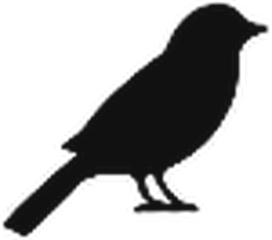
nspect Övervakningsenhet
Mobil värmekameraenhet för fladdermöss och fåglar, vid små vindkraftverk och vid byggnader. En enhet, två användningsområden.
Detta ingår
- Teleskopmast från 3 till 6 meter
- Två värmekameror för 3D-stereo, plus en tredje kamera
- Inbyggd fladdermusdetektor och fågelmikrofon
- Dator, 4G och GPS i en låst fot
- Elnät eller LiFePO4-batterier, utan bränsle
- Robust, vandalsäker kapsling med ballastfot
Uppställning vid ett litet vindkraftverk
Enheten står cirka 20 till 25 meter söder om verket, med masten på 5,8 meter. Båda värmekamerorna riktas tillsammans mot rotorn och registrerar flygrörelser i 3D.
Uppställning vid en byggnad
Enheten står cirka 10 meter snett framför ett hörn av byggnaden, med masten på 3,8 meter. Den vänstra kameran riktas mot den vänstra fasaden, den högra mot den högra fasaden.
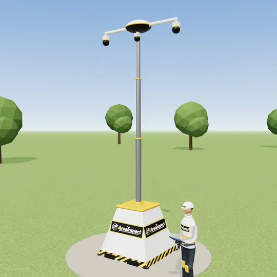
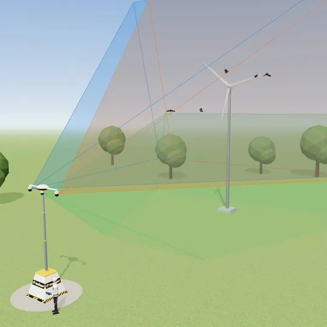
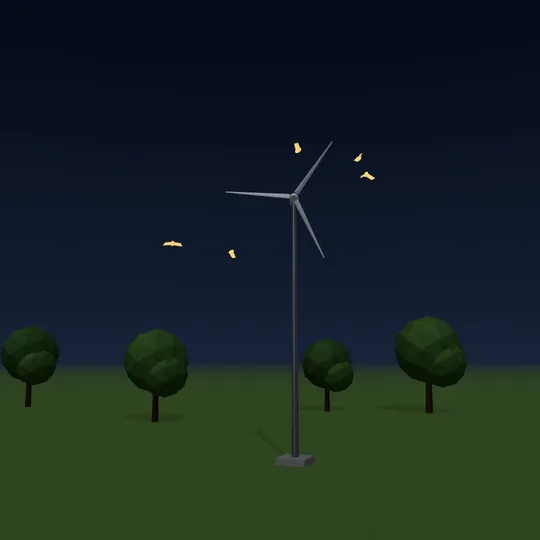
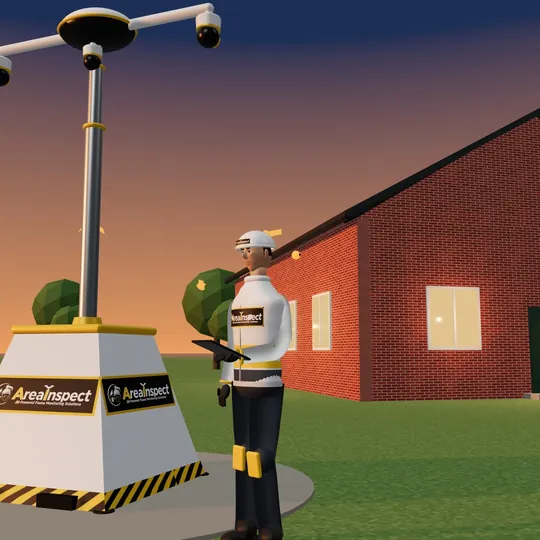
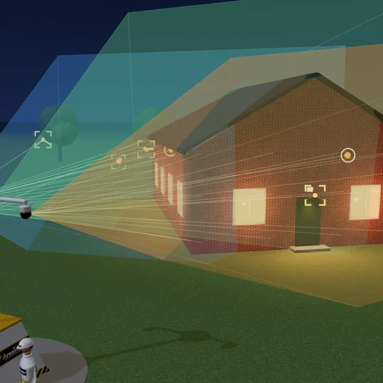
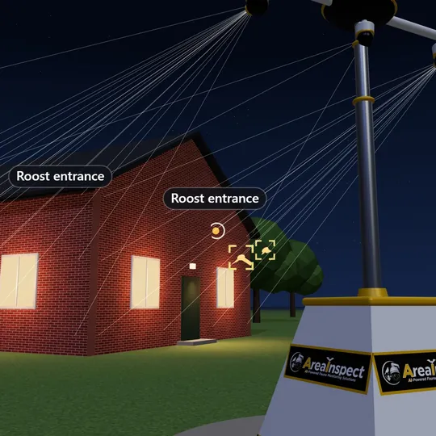
AreaI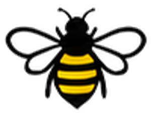
nspect Smart Bee Hotel
Smart övervakning av bihotell: tre 4K-kameror och AI som räknar vilka insekter som flyger in och ut i varje bohål.
- Passar för befintliga och nya bihotell
- Varje bohål får ett eget ID i det digitala registret
- Tre 4K-kameror på en vandalsäker enhet, 1,3 m framför bohålsväggen
- Känner igen solitära bin, honungsbin, humlor, getingar och blomflugor
- Larm vid en möjlig sammetsgeting
- Egen solpanel och 4G, inget elnät eller wifi behövs
Per bohål
In- och utflygningar, tidpunkter och beläggning per öppning.
För allmänheten
Med informationsskylt och QR-kod: besökarna ser vad som händer.
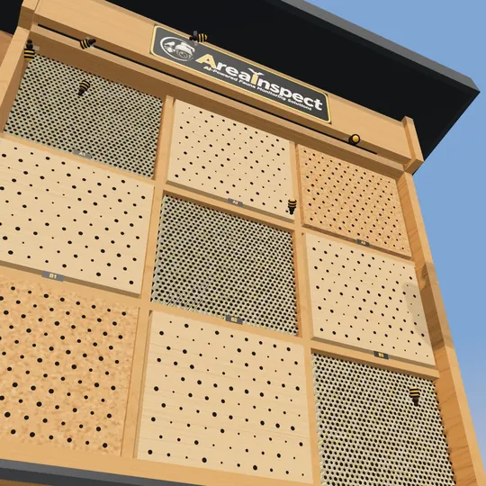
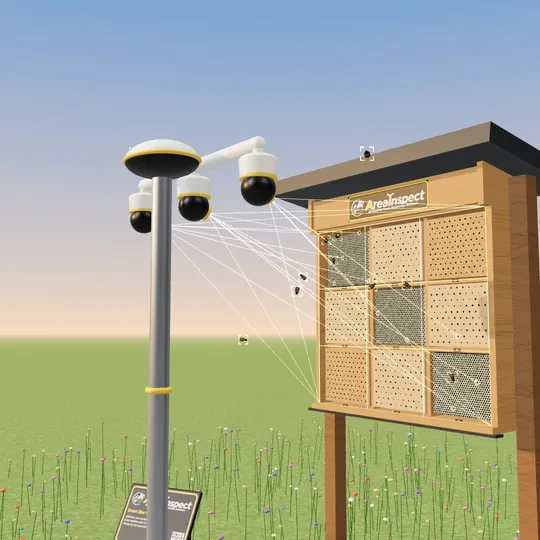
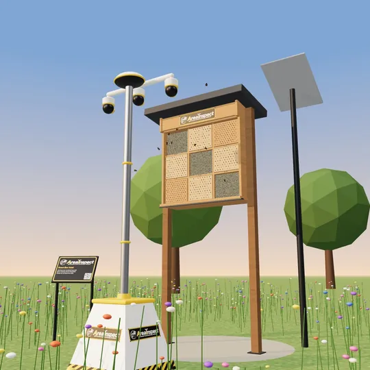
Så fungerar det
- 01
Placera
Vi placerar enheten på plats, riktar kamerorna mot vindkraftverket, byggnaden eller bihotellet och kalibrerar allt direkt på plats.
- 02
Mäta
Enheten registrerar självständigt, dag och natt, med kameror och mikrofoner. Endast de relevanta klippen skickas vidare via 4G.
- 03
Analysera
AI känner igen och räknar djuren och deras flygrörelser. En ekolog kontrollerar de osäkra fallen, så att resultaten är tillförlitliga.
- 04
Rapportera
Du får en dagsrapport och en tydlig slutrapport: ett tillförlitligt underlag för att skydda och stärka naturen på din plats. Alla data finns också i instrumentpanelen.
För vem
- Regioner, länsstyrelser och kommuner
- Ekologiska konsultbyråer
- Ägare av (små) vindkraftverk
- Bostadsbolag och byggföretag
- Naturvårdsorganisationer
- Biodlarföreningar och skolor